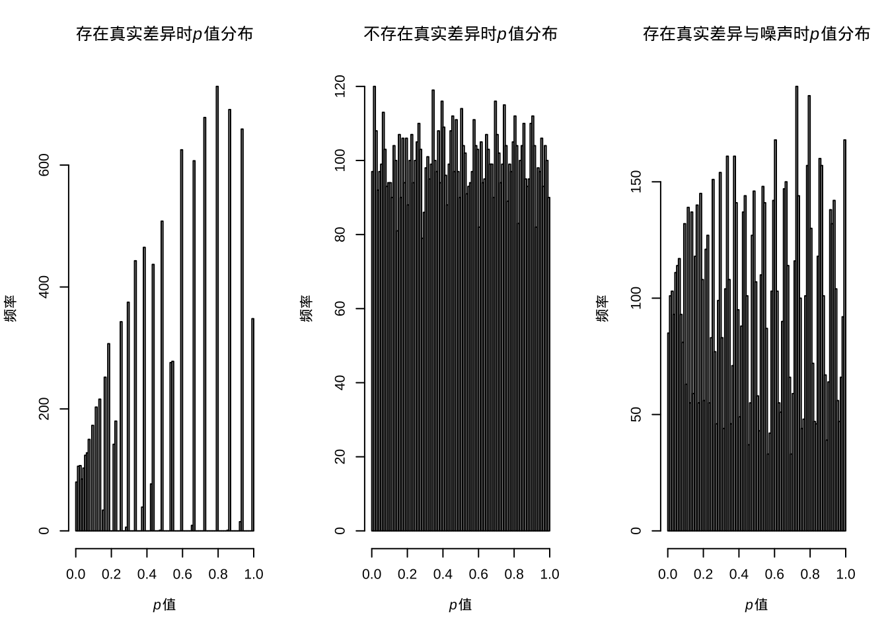
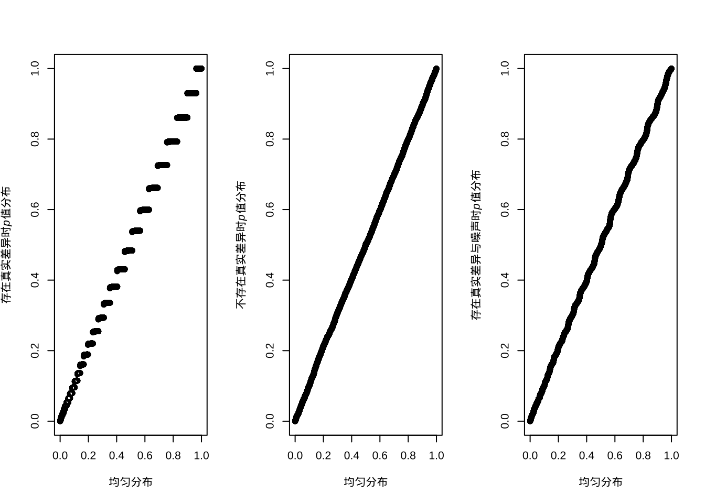
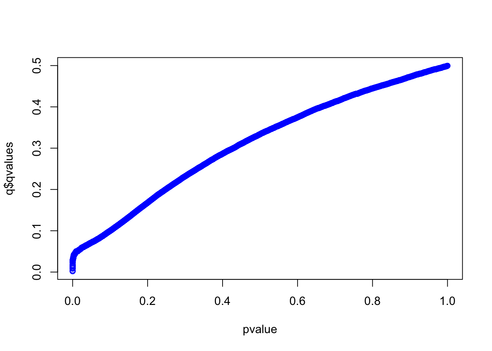
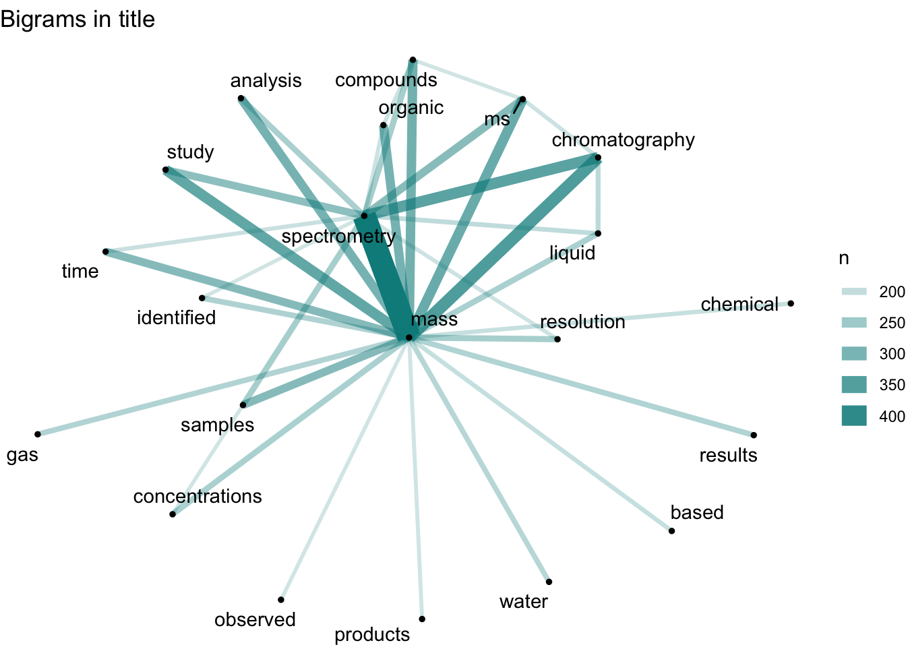
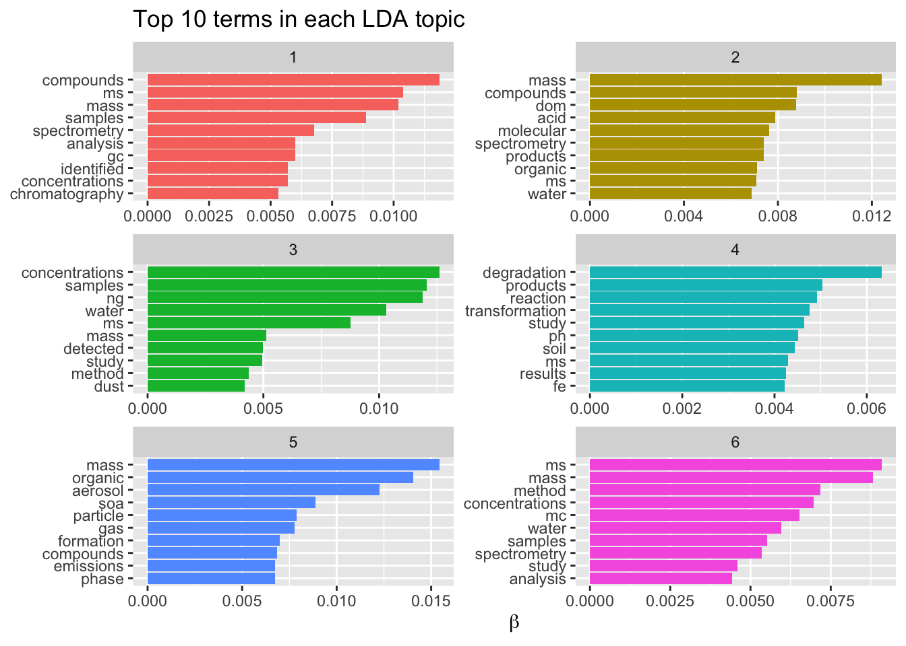

坑 6 数据处理
数据处理是科研中很重要的一环，同样的实验或观察数据不同的人处理会得到不同的结论。事实只有一个，但解释可以有很多，数据处理方式本身就会对解释产生影响。本章先讨论探索性数据分析，然后讨论统计推断的过程，之后解释线性模型与模型组合，因为科研中数据分析基本就是这几部分的反复迭代。然后讨论下现代科研中涉及的一些计算方法与技术，最后一节通过主成分分析把前面这些数据处理概念串起来讨论一下。
6.1 探索性数据分析
数据处理的第一步是探索性数据分析。本质上，所有数据分析都是从数据中挖掘规律，在有明确假设驱动的研究中，规律的探索是与数据收集实验设计紧密结合在一起的。探索性数据分析这对于观察数据或监测数据尤为重要，但对于假设驱动研究的数据探索性数据分析也有助于发现未预期的现象或进行故障诊断。探索性数据分析需要摒弃固有分析模式，用从头开始的思路对数据进行探索，可视化等手段有助于直观进行探索性数据分析。
所谓从头开始，就是从对数据本身的描述开始。基本的原则是：
- 一维数据看分布与异常值
- 二维数据看关系与趋势
- 三维看维度间两两关系
- 高维数据降维
- 相似个体聚类与网络结构
这些原则的核心就是对数据中规律性的本质进行直观展示，也因此可视化手段尤为重要。
对于一维数据，均值、中位数等单一数值常在媒体报道跟论文中用来指代群体，但其实牺牲了很多重要的分布细节进而产生误导，甚至让人产生被平均的感受，而直接展示整体其实并不困难，重要的是作者/研究者应放开心态，从引导读者认同自己观点转为让读者自己探索出结论。一维数据可以被抽象为单一数值，但更可能是多种基础分布的叠加，探索性分析就是要从中找出数据中均质性与异质性。此外，一维数据会存在异常值，这些异常值可能需要其他数据来探索出现的原因，也可能仅仅就是随机出现，这时候大样本量会有帮助。一维数据的可视化方式一般为直方图或概率密度曲线或箱式图等。
二维数据如果不是坐标，那么优先考察样本中两个维度描述的关系，特别是存在时间这个维度时，考察的就是动力学过程，动力学过程一般会存在自相关，也就是相邻时间采集数据会接近，并不是独立的，此时可考虑求导数，不仅一阶导数，更高阶的导数也可以考虑。如果是坐标，那就要展示到平面上看下空间分布的离散情况，有没有聚集或其他趋势，然后可引入其他维度来寻找原因。二维数据可视化方式为散点图、折线图、地图等，要辅助一维展示方式来保留更多的细节。
三维数据可视化其实也是通过二维展示的，可以分拆为两两的二维数据关系来探索，或者用透视的方式来展示。另外常见的三维数据可视化方式是引入除了坐标外的其他展示要素来二维展示其他的维度，例如通过颜色、大小、长度、宽度等，例如热图。也可以单纯用柱形图或雷达图来并列展示多个维度。不过当维度不断增长后，同时展示多维度会造成阅读困难，这与探索分析的初衷违背，此时要分而析之而不是盲目追求可视化的复杂度。
高维数据的探索需要先降维，基本思路是趋势相对一致的维度重新整合为一个独立维度，提取出一个新维度。最常见的降维方式是主成分分析或因子分析，可理解为通过坐标轴映射让方差方向相对一致的因子重组为单一因子。另外的降维方式则有流形分析的一些技术例如 t-SNE、UMAP或基于人工神经网络的SOM等，都可以用来非线性降维。这里一定要清楚降维的前提是维度间存在某种相似性可以被降维，如果都是相对独立的，例如第一主成分对方差解释连5%都不到，那么优先要做的不是降维，而是冗余分析，把不相关的维度先筛掉。大量不相关的维度会增加数据整体方差且降低发现真正规律的统计方法功效，因此不要盲目迷信方法，根据探索的方向来保留有意义的数据维度。
除了在样品维度上进行探索，样本间的关系可能也不是独立的。此时可以引入聚类分析来探索样本间的关系，聚类分析的核心在于样品间距离的定义，要根据数据本身的情况来定，但欧式距离比较常见。除了聚类分析，也可以考虑探索样本间层级关系或更一般的网络关系，此时要定义好层级间或节点间的连接条件，例如最常见的相关性，这样就可以对样品间的相互关系进行探索，看是否存在样本聚类的情况。当然，该方法也可用来探索维度间关系。
探索性分析不同于基于假设的统计推断，往往更侧重直观展示与形成假设，后者则侧重验证与预测。探索性数据分析对于科研非常重要，因为很多新现象规律的发现都是在这阶段完成的。相应的，科研人员应掌握足够多的可视化工具，了解其探索的关系与原理，基于 R 语言可参考《现代统计图形》。
6.2 统计推断
探索性分析之后对于数据应该形成一定的感知，例如看到一些分组差异或分布趋势。此时通常要做的是统计推断，也就是判断这个差异是否真实存在。统计推断第一步是抽象出统计量，第二步是对统计量进行假设检验，这样就可以得到初步的结论。
统计量可根据探索性分析来决定，单一维度的统计量一般就是均值、方差、众数、中位数这些而多维度的统计量就涉及协方差、相关系数这类。统计量是描述总体的，可以通过对总体进行简单随机抽样获得。
这里经常混淆的概念就是标准差与标准误，其实这两个统计量描述的就不是一个东西。标准差是描述总体的，跟采样无关。也就是说，样本均值就是总体均值的无偏估计，样本的方差也是总体方差的无偏估计而标准差就是样本方差开平方。然而，标准误是衡量样本均值的变动情况，是描述样本的统计量，伴随样本数的提升，标准误会越来越小，不过此时总体的标准差是不变的。下面我们用公式来推导下这个过程，首先我们来证明样本方差是总体方差的无偏估计：
样本方差的公式是\(S^2 = \frac{\sum_{i=1}^n (X_i - \bar X)^2}{n-1}\)，这里这个\(n-1\)很多人不理解，我们来计算下：
\[\begin{eqnarray*} E\left[\sum_{i=1}^n (X_i - \bar X)^2\right] & = & \sum_{i=1}^n E\left[X_i^2\right] - n E\left[\bar X^2\right] \\ \\ & = & \sum_{i=1}^n \left\{Var(X_i) + \mu^2\right\} - n \left\{Var(\bar X) + \mu^2\right\} \\ \\ & = & \sum_{i=1}^n \left\{\sigma^2 + \mu^2\right\} - n \left\{\sigma^2 / n + \mu^2\right\} \\ \\ & = & n \sigma^2 + n \mu ^ 2 - \sigma^2 - n \mu^2 \\ \\ & = & (n - 1) \sigma^2 \end{eqnarray*}\]
从上面的计算中我们不但可以知道样本方差公式里为什么有个\(n-1\)，也明白了为什么是总体方差的无偏估计。然后我们计算下样本均值的方差：
\[\begin{eqnarray*} Var(\bar X) & = & Var \left( \frac{1}{n}\sum_{i=1}^n X_i \right)\\ \\ & = & \frac{1}{n^2} Var\left(\sum_{i=1}^n X_i \right)\\ \\ & = & \frac{1}{n^2} \sum_{i=1}^n Var(X_i) \\ \\ & = & \frac{1}{n^2} \times n\sigma^2 \\ \\ & = & \frac{\sigma^2}{n} \end{eqnarray*}\]
这里我们可以看到，样本均值的方差是跟样本数有关的而公式里总体方差可以用样本方差公式来估计，是个常量，这样就可以知道样本均值的标准差（也就是标准误）会伴随样本数增加而减小。也可以理解为我们抽样越多对均值的估计就越准，但总体方差是总体属性，不会因为我们更多的抽样而发生变化。
统计量可以是一个数值，也可以是一个区间，因此对于统计量的估计也有点估计与区间估计两种方法。现在越来越多的研究要求报告区间估计，这里只介绍下置信区间。所谓置信区间，是指在一定置信水平（通常是95%）下包含真值的区间，是对总体参数的估计。这里一个经常出现的误解是认为95%置信区间指真值出现在区间内的概率是95%，这个描述的问题在于没搞清楚置信区间描述的是一个真值而不是概率，真值是唯一的，置信水平是区间内包含真值的概率。也就是说，假如我们从总体里抽样来估计均值的置信区间，这个行为重复100次，会产生100个置信区间，其中会有约95个区间内是包含真值的。这是频率学派对置信区间的解释，贝叶斯学派的可信区间是更符合真值出现在区间内的概率这个解释的，这两个学派对于数据的假设不一样，因此计算方法也不一样。
有了统计量，我们就可以进行比较了。这就是前面章节提到的NHST与p值问题，这里的问题这边不再复述，这里更多分析下一些统计推断中的概念。所谓推断，更多是要涉及决策的需要明确零假设、备择假设与p值。在这里要明确统计差异显著并不代的实际差异显著，甚至都不一定有实际意义，我们在论文里看到差异显著的描述只能说通过了统计推断里的假设检验，只是一个参考。打个比方，衣服的尺码里L码与M码差异显著，但对于一个体形介于两者之间的人而言，这两件衣服穿着都算舒服，此时究竟差异显著与否意义就不大了。
科研里最常用的比较是两独立样本均值比较的t检验与评价单因素多水平影响的方差分析。t检验可以看作方差分析的特例，使用统计量t来比较而方差分析通常是用分类变量所解释的变异比上分类变量以外的变异去进行F检验。换句话讲，如果分类变量可以解释大部分响应变量的变异，我们就说这种分类变量对响应变量的解释有意义。例如下面这组数据：
1, 1, 1, 1, 1, 2, 2, 2, 2, 2, 3, 3, 3, 3, 3
总变异为10, 如果我们分组为按照相同的数放到一起，那么组内变异就是0，组间变异为10，这时我们就说这种分组有效的解释了响应变量，F值趋向正无穷。如果我们完全随机分组，组内与组间的变异差不多，那么这种分类方法并不解释响应变量，反映到F值上就是1。
但是仅仅知道是否受影响是不够的，如同上面的例子，我们知道的仅仅是存在一种分类方法可以解释响应的全部变化，其内部也是均匀的，但不同分类水平间的差异我们并不知道，这就需要多重比较了。例如，当我们对两组数据做置信度0.05的t检验，我们遇到假阳性的概率为5%。但如果面对多组数据例如3组，进行两两比较的话就有\(3\choose2\)也就是3组对比，那么我们遇到假阳性的概率就为\(1-(1-0.05)^3\)，也就是14.3%，远高于0.05的置信度。组越多，两两对比就越多，整体上假阳性的概率就越来越大，到最后就是两组数据去对比，无论如何你都会检验出差异。
此外就方向而样，虽然我们都不承认零假设（要不然还做什么实验），但当我们默认设定为双尾检验时，假阳性就被默认发生在两个方向上了，这样的多重比较必然导致在其中一个方向上的错误率被夸大了。就影响大小而言，如果我们每次重复都选择效应最强的那一组，重复越多，预设的偏态就越重，换言之，我们的零假设因为重复实验的选择偏好而发生了改变。
那么多重比较如何应对这个问题呢？有两种思路，一种思路是我依旧采取两两对比，进行t检验，但p值的选取方法要修改，例如Bonferroni方法中就把p的阈值调整为进行多重比较的次数乘以计算得到的p值。如果我们关心的因素为2，那么计算得到的p值都要乘2来跟0.05或0.01的边界置信度进行比较；另一种思路则是修改两两比较所用的统计量，给出一个更保守的分布，那么得到p值就会更大。不论怎样，我们这样做都是为了降低假阳性，但同时功效不可避免的降低了。
多重比较的方法类型包括单步法与逐步法。单步法只考虑对零假设的影响而不考虑其他影响而逐步法则会考虑其他假设检验对单一检验的影响，例如可以先按不同分组均值差异从大到小排序，先对比第一个，有差异对比下一个，当出现无差异时停止对比；或者从下到大排序，有差异时停止对比，之后均认为有差异。此时还要注意一种特殊情况，因为F检验是从方差角度来考虑影响显著性与否，所以可能存在F检验显著但组间均值差异均不显著的情况，此时要考虑均值间线性组合的新均值的差异性。不过，大多数情况我们只用考虑不同组间两两差异比较即可。
具体而言，单步法等方差多重比较最常见的是Tukey’s HSD方法，这是一个两两比较的方法，基于 studentized range 分布计算出q统计量，然后基于这个统计量进行两两间差异的假设检验。该方法适用于分组间等方差等数目的场景，如果分组内数目不同，需要用 Tukey-Kranmer 方法。该方法适用于两两比较，在分组数目相同时统计功效等同于从大到小排序的逐步法。
此外，还有些多重比较的方法在特定学科里也很常见。从总体控制错误率的角度，如果是两两比较应该选 Tukey’s HSD方法；如果侧重组间差异线性组合的均值用 Scheffe test；如果对比数指定了，功效按 Gabriel、GT2、DST、 Bonferroni顺序来选；如果是各分组都跟控制组比，应该选Dunnett法；如果各分组方差不相等，用GH，C，T3等方法。此外，如果打算保证每个比较中的置信水平，应该选 Tukey、 Scheffe、Dunnett法。
与多重比较类似的一个统计推断问题是多重检验问题。多重检验指的是同时进行多次假设检验的场景，其实多重比较可以看作多重检验在方差分析里的一个特例。举例而言，我对两组样品（暴露组跟对照组）中每一个样品测定了10000个指标，每组有10个样品，那么如果我想知道差异有多大就需要对比10000次，具体说就是10000次双样本t检验。那么如果我对t检验的置信水平设置在95%，也就是5%假阳性，做完这10000次检验，我会期望看到500个假阳性，而这500个有显著差异的指标其实对分组不敏感也可以随机生成。假如真实测到了600个有显著差异的指标，那么如何区分其中哪些是对分组敏感？哪些又仅仅只是随机的呢？随机的会不会只有500个整呢？这个场景在组学技术与传感器技术采集高通量高维数据的今天变得越来越普遍。
这个问题在做经典科研实验时往往会忽略，深层次的原因是经典的科研实验往往是理论或经验主导需要进行检验的假说。例如，我测定血液中白血球的数目就可以知道你是不是处于炎症中，其背后是医学知识的支撑。然而，在组学或其他高通量实验中，研究实际是数据导向的，也就是不管有用没用反正我测了一堆指标，然后就去对比差异，然后就是上面的问题了，我们可能分不清楚哪些是真的相关，哪些又是随机出现的。
对于单次比较，当我们看到显著差异的p值脑子里想的是零假设为真时发生的概率，当我们置信水平设定在0.95而p值低于对应的阈值，那么我们应该拒绝零假设。但对比次数多了从概率上就会出现已经被拒绝的假设实际是错误的而你不知道是哪一个。整体错误率控制的思路就是我不管单次比较了，我只对你这所有的对比次数的总错误率进行控制。还是上面的例子，对于10000次假设检验我只能接受1个错误，整体犯错概率为0.0001，那么对于单次比较，其假阳性也得设定在这个水平上去进行假设检验，结果整体上错误率是控制住了，但对于单次比较就显得十分严格了。下面用一个仿真实验来说明：
# 随机数的10000次比较
set.seed(42)
pvalue <- NULL
for (i in 1:10000){
a <- rnorm(10)
b <- rnorm(10)
c <- t.test(a,b)
pvalue[i] <- c$p.value
}
# 看下p值分布
hist(pvalue)
# 小于0.05的个数
sum(pvalue<0.05)## [1] 477# 小于0.0001的个数
sum(pvalue<0.0001)## [1] 0这样我们会看到进行了整体的控制之后，确实是找不到有差异的了，而且此时我们也可以看到p值的分布应该是0到1之间的均匀分布。但假如里面本来就有有差异的呢？
set.seed(42)
pvalue <- NULL
for (i in 1:10000){
a <- rnorm(10,1)
b <- a+1
c <- t.test(a,b)
pvalue[i] <- c$p.value
}
# 看下p值分布
hist(pvalue)
# 小于0.05的个数
sum(pvalue<0.05)## [1] 6559# 小于0.0001的个数
sum(pvalue<0.0001)## [1] 45上面我们模拟了10000次有真实差异的假设检验，结果按照单次检验0.05的阈值能发现约7000有差异，而使用0.0001却只能发现不到100次有显著差异。那么问题很明显，或许控制整体错误率可以让我们远离假阳性，但假阴性就大幅提高了或者说功效降低了，最后的结果可能是什么差异也看不到。
下面我们尝试一个更切合实际的模拟，混合有差异跟无差异的检验：
set.seed(42)
pvalue <- NULL
for (i in 1:5000){
a <- rnorm(10,1)
b <- a+1
c <- t.test(a,b)
pvalue[i] <- c$p.value
}
for (i in 1:5000){
a <- rnorm(10,1)
b <- rnorm(10,1)
c <- t.test(a,b)
pvalue[i+5000] <- c$p.value
}
# 看下p值分布
hist(pvalue)
# 小于0.05的个数
sum(pvalue<0.05)## [1] 3499# 小于0.0001的个数
sum(pvalue<0.0001)## [1] 21此时结果就更有意思了，明明应该有5000次是有差异的，但阈值设定在0.05只能看到约3500次，而0.0001只能看到24次。
上面的模拟告诉我们，降低假阳性的方法会提高假阴性的比率，也就是功效不足，无法发现本来就有的差异。而且似乎本来0.05的阈值对于真阳性也是偏小的。同时，面对假设检验概率低于0.05的那些差异，我们也没有很好的方法区别哪些是真的，哪些是随机的。其实很多人都知道整体错误率控制是比较严格的，会损失统计功效。但也不是完全没人用，例如寻找生物标记物做重大疾病诊断时就不太能接受假阳性而可以接受一定的假阴性，此时如果标准放宽就会找到一大堆假信号，到时候标记不准就会对诊断产生负面影响。
下面介绍下常见的两种整体错误率控制方法。第一种是 Bonferroni 方法，控制的是整体错误率（FWER），思路很简单，就是控制显著性，例如单次检验假阳性比率\(\alpha\)控制在0.05，那么n次检验假阳性比率控制为\(\frac{\alpha}{n}\)。这样实际是对整体采用了个体控制的控制思路：
\[ P(至少一个显著)=1-P(无显著差异) = 1-(1-\alpha/n)^n \]
我们来看下\(\alpha = 0.05\)随比较数增加的效果：
# 比较次数
n <- c(1:10 %o% 10^(1:2))
# 整体出现假阳性概率
p0 <- 1-(1-0.05)^n
# Bonferroni方法控制后的整体假阳性概率
p <- 1-(1-0.05/n)^n
# 不进行控制
plot(p0~n,ylim = c(0,1),xlab='numbers of tests',ylab = 'FWER')
# Bonferroni方法控制
points(p~n,pch=19,col='red')
legend('right',c('Bonferroni','Raw'),col = c('red','black'),pch = 1,cex=1)
其实，这样的控制得到的整体错误率是略低于0.05的，并且数目越大，整体错误率越低。这个方法十分保守，有可能什么差异你都看不到，因为都变成假阴性了。在实际应用中一般不调节p值的假阳性比率而直接调节p值，取原始p值跟整体检验数目的乘积与1的最小值作为调节p值，还可以用0.05或0.01进行判断，不过这时候控制的整体而不是单一检验了。
当然这只是最原始的 Bonferroni 方法，后来Holm改进了这种一步法为逐步法，此时我们需要首先对原始p值进行排序，然后每个原始p值乘上其排序作为调节p值。例如三次多重检验的p值分别是0.01、0.03与0.06，排序为3、2、1，其调节后的p值为0.03，0.06，0.06。如果我们控制整体假阳性比率低于0.05，那么调解后只有第一个检验可以拒绝零假设。值得注意的是Holm的改进是全面优于原始方法的，也就是说当你一定要去用Bonferroni方法控制整体错误率，优先选Holm的改进版。
上面那种方法其实有点非参的意思，其实数学上我们是可以精确的把假阳性比率控制在某个数值的，也就是Sidak方法：
\[ P(至少一个显著)=1-P(无显著差异) = 1-(1-\alpha')^n = 0.05 \]
求解可得到\(\alpha' = 1-0.95^{\frac{1}{n}}\)，此时我们就可以比较精确的控制整体错误率了，但是，这个方法有个前提就是各个检验必须是独立的，这在生物学实验里几乎不可能，所以这个方法的应用远没有Bonferroni方法广。
刚才的模拟中我们可以看到，控制整体错误率比较严格，假阴性比率高，那么有没有办法找到假阴性比率低或者说功效高的呢？要知道我们其实只关心有差异的那部分中那些是真的，哪些是假的，无差异的可以完全不用考虑。那么我们可以尝试控制错误发现率（FDR），也就是在有差异的那一部分指标中控制错误率低于某一水平。
# 所有有差异的
R <- sum(pvalue<0.05)
R## [1] 3499# 假阳性
V <- sum(pvalue[5001:10000]<0.05)
V## [1] 225# 错误发现率
Q <- V/R
Q## [1] 0.06430409上面的计算显示虽然我们漏掉了很多阳性结果，但错误发现率并不高。事实上如果我们控制错误率到0.01，错误发现率会更低：
# 所有有差异的
R <- sum(pvalue<0.01)
R## [1] 999# 假阳性
V <- sum(pvalue[5001:10000]<0.01)
V## [1] 34# 错误发现率
Q <- V/R
Q## [1] 0.03403403其实出现这个问题不难理解，零假设检验里p值是均匀分布的而有差异检验的p值是有偏分布且偏向于较小的数值，所以假阳性控制的越小，有偏分布占比例就越高，但同时会造成假阴性提高的问题。
那么错误发现率会不会比整体错误率的控制更好呢？这里通过两种常见的控制方法进行说明。
Benjamini-Hochberg方法跟Holm方法很像，也是先排序，但之后p值并不是简单的乘排序，而是乘检验总数后除排序：
\[ p_i \leq \frac{i}{m} \alpha \]
举例来说就是假设三次多重检验的p值分别是0.01、0.03与0.06，其调节后的p值为0.03，0.45，0.06。那么为什么说这种方法控制的是错误发现率呢？我们来看下\(\alpha\)是如何得到的：p值乘总数m得到的是在该p值下理论发现数，而除以其排序实际是该p值下实际发现数，理论发现数基于在这里的分布是均匀分布，也就是零假设的分布，这两个的比值自然就是错误发现率。下面我用仿真实验来说明一下：
# BH法控制错误发现率
pbh <- p.adjust(pvalue,method = 'BH')
# holm法控制错误发现率
ph <- p.adjust(pvalue,method = 'holm')
plot(pbh~pvalue,ylab = 'FDR',xlab = 'p value')
points(ph~pvalue,col='red')
legend('bottomright',c('Holm','BH'),col = c('red','black'),pch = 1,cex=1)
从上面图我们可以看出，如果控制整体错误率（红色），那么p值很容易就到1了，过于严格。而如果用BH方法控制错误发现率，那么原始p值越大，调节后的错误发现率也逐渐递增，这就符合了区分真实差异与随机差异就要假设真实差异更可能出现更小的p值这个现象。值得注意的是这个错误发现率求的是有差异存在的情况，不然零发现就出现除数为零了。
如果说BH方法还算是调节了p值，那么Storey提出的方法则直接去估计了错误发现率本身。刚才介绍BH算法时我提到总数m与p值的乘积是基于这里的分布是均匀分布，但实际上按照错误发现率的定义，这里应该出现的是零假设总数。直接使用所有检验数会造成一个问题，那就是对错误发现率的高估，为了保证功效，这里应该去估计零假设的总体比例。这里我们去观察混合分布会发现在p值较大的时候基本可以认为这里分布的都是零假设的p值，那么我们可以用：
\[ \hat\pi_0 = \frac{\#\{p_i>\lambda\}}{(1-\lambda)m} \]
估计这个比例\(\hat\pi_0\)，其中参数\(\lambda\)的跟\(\hat\pi_0\)的关系可以用一个三阶方程拟合，然后计算出整体假阳性比例。有了这个比例，我们再去按照BH方法计算p值，然后两个相乘就会得到q值，而q值的理论含义就是在某一概率上低于这个概率所有数里假阳性的比重。打个比方，我测到某个指标的q值是0.05，这意味着q值低于这个数所有检验中我有0.05的可能性得到的是假阳性。。但我们会发现当零假设比重较高时BH结果跟q值很接近，而比重很低的话q值会变得更小，功效会提高，基本也符合我们对错误发现率的预期。
library(qvalue)
q <- qvalue(pvalue)
# Q值
plot(q$qvalues~pvalue,col='blue',ylab = 'Q',xlab = 'p value')
如上图所示，q值增大后会最终逼近到0.5，而我们的模拟中零假设的比例就设定就是50%。我们重新模拟一个零假设比例5%的实验：
set.seed(42)
pvalue <- NULL
for (i in 1:500){
a <- rnorm(10,1)
b <- a+1
c <- t.test(a,b)
pvalue[i] <- c$p.value
}
for (i in 1:9500){
a <- rnorm(10,1)
b <- rnorm(10,1)
c <- t.test(a,b)
pvalue[i+500] <- c$p.value
}
pbh <- p.adjust(pvalue,method = 'BH')
ph <- p.adjust(pvalue,method = 'holm')
q <- qvalue(pvalue)
plot(pbh~pvalue,ylab = 'FDR',xlab = 'p value')
# Holm 方法
points(ph~pvalue,col='red')
# Q值
points(q$qvalues~pvalue,col='blue')
legend('bottomright',c('Q','Holm','BH'),col = c('blue','red','black'),pch = 1,cex=1)
此时我们可以看到两者结果较为接近，q值理论上更完备，功效也更强，但算法上对\(\hat\pi_0\)的估计并不稳定，特别是比例靠近1的时候，所以BH方法可能还是更容易让人接受的保守错误发现率控制方法。
多重检验问题是高通量数据里逃不掉的问题，要想找出真正的差异数据就要面对假阳性跟假阴性问题，这是一个不可兼得的过程，看重假阳性就用整体错误率，看重假阴性或功效就用错误发现率控制。并不是说哪种方法会好一些，更本质的问题在于你对实际问题的了解程度及统计方法的适用范围。实验设计本身就会影响数据的统计行为，而这个恰恰是最容易被忽视的。
6.3 线性模型
几乎所有的统计推断都可以放到统计模型里讨论，如果需要可进一步进行预测。科研中最常用的统计模型是线性模型，很多常见的统计推断方法都可以用线性模型的框架来解释。例如双样本t检验可算作方差分析的特例，方差分析可以看作带有伪变量的回归，协方差分析可以看作回归中的交互作用…
线性模型的基本形式就是因变量是由自变量作用加和而成，在这个语境下，其实把自变量改为变量，放宽独立性限制，也能将一些非线性部分，例如高幂次的自变量及变量间的乘积或交互作用考虑进去。在实际问题的抽象上，只要可以把目标数值的变动用其他数值的拆解或组合表示出来，那么可以粗略认为标准化后其他数值的回归系数可用来比较不同数值间的贡献，而对于该系数的显著性检验则可以说明该系数的影响是否显著。
打个比方，流行病学里常说的某种疾病发病率或风险比在考虑了人群性别、年龄、BMI、吸烟史等的影响后发现某污染物起了显著影响，这就是说在一个目标变量为病发病率或风险比的线性模型中，性别、年龄、BMI、吸烟史作为协变量而污染物作为自变量，模型拟合结束后发现污染物的系数经假设检验为显著差异于零，也就是没影响。这里，协变量与自变量在回归上是平等的，可以把协变量理解为控制变量，如果你考察吸烟的影响，那么吸烟与否就是自变量，包含污染物在内其他项就成了协变量。不过所有考察变量选择的原则在于其理论上或经验上被认为与目标变量有关系且无法通过随机采样、配对等手段消除影响，这种情况对于观测数据比较常见。
在线性模型中，如果我们将两个共相关的变量放到同一个线性回归模型之中，那么这两个变量的系数估计的标准误都会扩大。下面我们展示下这个干扰过程：
set.seed(42)
a <- runif(100,min=0,max=10)+rnorm(100)
b <- a*1.2+rnorm(100)
c <- b*1.2+rnorm(100)
y <- a+b+c+rnorm(100)上面我们由两个变量生成了一个新变量，然而这两个变量是相关的，此时我们进行回归分析：
summary(lm(y~a))##
## Call:
## lm.default(formula = y ~ a)
##
## Residuals:
## Min 1Q Median 3Q Max
## -4.1929 -1.9935 -0.2595 1.9301 5.3011
##
## Coefficients:
## Estimate Std. Error t value Pr(>|t|)
## (Intercept) -0.14295 0.44101 -0.324 0.747
## a 3.65619 0.07162 51.048 <2e-16 ***
## ---
## Signif. codes:
## 0 '***' 0.001 '**' 0.01 '*' 0.05 '.' 0.1 ' ' 1
##
## Residual standard error: 2.339 on 98 degrees of freedom
## Multiple R-squared: 0.9638, Adjusted R-squared: 0.9634
## F-statistic: 2606 on 1 and 98 DF, p-value: < 2.2e-16summary(lm(y~a+b+c))##
## Call:
## lm.default(formula = y ~ a + b + c)
##
## Residuals:
## Min 1Q Median 3Q Max
## -2.10681 -0.69646 -0.06907 0.66959 2.31841
##
## Coefficients:
## Estimate Std. Error t value Pr(>|t|)
## (Intercept) -0.03088 0.18341 -0.168 0.867
## a 1.20491 0.12910 9.333 4.03e-15 ***
## b 0.69905 0.16038 4.359 3.28e-05 ***
## c 1.11364 0.10523 10.583 < 2e-16 ***
## ---
## Signif. codes:
## 0 '***' 0.001 '**' 0.01 '*' 0.05 '.' 0.1 ' ' 1
##
## Residual standard error: 0.9716 on 96 degrees of freedom
## Multiple R-squared: 0.9939, Adjusted R-squared: 0.9937
## F-statistic: 5194 on 3 and 96 DF, p-value: < 2.2e-16这里我们可以看到，如果只把第一个变量放入模型，那么斜率理论上应该是3.6。但此时我们把跟这个变量相关的另外两个变量放进去后回归模型对三个相关变量的系数估计都不再准确（应该都是1），标准误也扩大了。这个现象对理解线性模型非常重要，如果我们任意在线性模型里加入变量，变量间的随机相关会导致整个模型的回归系数估计性能都下降。因此线性模型不能随意加减自变量，最好事先考察自变量间的关系。
当线性模型的自变量只有一项时，其实考察的就是自变量与响应变量间的相关性。当自变量为多项时，也就是多元线性回归，考察的是你自己定义的“自变量”与“协变量”还有响应变量的关系。如果自变量间不能互相独立，那么最好将独立的部分提取出来作为新的变量，这种发现潜在变量的过程归属于因子分析，可以用来降维。自变量本身存在随机性，特别是个体差异，这种随机性可能影响线性模型自变量的系数或斜率，也可能影响线性模型的截距，甚至可能同时影响，此时考虑了自变量的随机性的模型就是线性混合模型。线性混合模型其实已经是层级模型了，自变量的随机性来源于共同的分布。如果自变量间存在层级，例如有些变量会直接影响其他变量，那么此时线性模型就成了决策/回归树模型的特例了。如果层级关系错综复杂，那不依赖结构方程模型是没办法搞清楚各参数影响的。然而模型越复杂，对数据的假设就越多，对样本量的要求也就越高。同时，自变量或因变量有些时候也要事先进行连续性转换，这就给出了logistics回归、生存分析等特殊的回归模型。科研模型如果是依赖控制实验的，那么会在设计阶段随机化绝大部分变量，数据处理方面到线性混合模型就已经很少见了。
但对于观测数据，线性混合模型只是起点，对于侧重观察数据的社会科学研究，样本量与效应大小是结论可靠性的关键，精细的模型无法消除太多的个体差异。这种复杂关系走到极端就是网络分析了，网络分析适合用来研究多样本或特性间的关系，这类关系通常用互相连接的节点来表示，在可视化中节点一般指代一个样本或特性，连线则代表了样本间或特性间的关系。说白了网络分析是另一层意义上的因子分析，起一个降维作用，只是降维方式不是简单的线性组合而是引入了图论的一些统计量。
高维数据是线性模型的一大挑战，当维度升高后，变量间要么可能因为变异来源相似而共相关，要么干脆就是随机共相关。在某些场景下，高维数据可能都没有目标变量，需要先通过探索性数据分析找出样本或变量间的组织结构。这种场景下应通过变量选择过程来保留独立且与目标变量有潜在关系的变量。也就是说，变量选择的出发点是对数据的理解，优先考虑相关变量而非简单套用统计分析流程。当然，统计方法上也有变量选择的套路，评判标准可能是信息熵或模型稳健度的一些统计量，可以借助这些过程来简化模型或者说降维。对于线性模型而言，就是均方误、Mallow’s \(C_p\)、AIC、BIC还有调节R方等，可借助回归模型软件来完成。
回归或模型拟合都存在过拟合的风险，所谓过拟合，就是模型对于用来构建模型的数据表现良好，但在新数据的预测性上却不足的情况。与过拟合对应的是欠拟合，此时拟合出的模型连在构建模型的数据验证上表现都不好。这里的表现可以用模型评价的一些指标，其实跟上面进行变量选择的指标是一样的，好的模型应该能捕捉到数据背后真实的关系，也因此在训练数据与新数据上表现一致。
在统计学习领域里，工程实践上最简单的验证过拟合与欠拟合的方法就是对数据进行切分，分为用来构建模型的训练集与验证模型预测性能的检测集，更细的分法则将检测集分为可在模型调参过程中使用多次的检测集与最后最终评价模型的一次性验证集，三者比例大概6:3:1，也可根据实际情况来定。也就是说，模型的构建不是一次性完成的，而是一个反复调整模型参数的过程来保证最终的模型具备良好的预测性与稳健度。
在技术层面上，调参过程有两种基本应对方法，第一种是重采样技术，第二种是正则化，两种方法可以组合使用。重采样技术指的是通过对训练集反复采样多次建模来调参的过程。常见的重采样技术有留一法，交叉检验与bootstrap。留一法在每次建模留一个数据点作为验证集，重复n次，得到一个CV值作为对错误率的估计。交叉检验将训练集分为多份，每次建模用一份检验，用其他份建模。bootstrap更可看作一种思想，在训练集里有放回的重采样等长的数据形成新的数据集并计算相关参数，重复多次得到对参数的估计，计算标准误。在这些重采样技术中，因为进行的多次建模，也有多次评价，最佳的模型就是多次评价中在验证集上表现最好的那一组。
正则化则是在模型构建过程中在模型上对参数的效应进行人为减弱，用来降低过拟合风险。具体到线性模型上，就是在模型训练的目标上由单纯最小化均方误改为最小化均方误加上一个对包含模型参数线性组合的惩罚项，这样拟合后的模型参数对自变量的影响就会减弱，更容易影响不显著，如果自变量过拟合的话就会被这个正则化过程削弱。当惩罚项为模型参数的二次组合时，这种回归就是岭回归；当惩罚项为模型参数的一次绝对值组合时，这种回归就是lasso；当惩罚项为一次与二次的组合时，这种回归就是弹性网络回归。实践上正则化过程对于降低过拟合经常有神奇效果，同时正则化也可作为变量选择的手段，虽然岭回归无法将系数惩罚为0，但lasso可以，这样在参数收缩过程中也就同时实现了变量选择。
为了说明实际问题，有时候单一形式的模型是不能完全捕捉数据中的变动细节的，我们可以在工程角度通过模型组合来达到单一模型无法达到的预测性能。模型组合的基本思想就是对同一组数据生成不同模型的预测结果，然后对这些结果进行二次建模，考虑在不同情况下对不同模型预测结果给予不同的权重。这种技术手段可以突破原理限制，而最出名的例子就是人工神经网络里不同神经元采用不同核函数的做法了。
对于科研数据的线性回归，还有两个常见问题，一个是截断问题，另一个是缺失值处理。截断问题一般是采样精度或技术手段决定的，在数值的高位或低位无法采集高质量数据，此时可以借助截断回归等统计学方法来弥补。另一种思路则是在断点前后构建不同的模型，这样分别应对不同质量的数据。对于数据缺失值的问题，统计学上也提供了很多用来删除或填充缺失值的方法，填充数据不应影响统计推断，越是接近的样本，就越是可以用来填充缺失值，当然这个思路反着用就是个性化推荐系统模型的构建了。
除了线性模型，非线性模型在某些研究中也经常用，特别是对一些机理的验证上，经常要拟合S型曲线，此时模型的形式往往是固定的，用来给出一些过程中重要的参数。但如果你打算提出新的模型，就要认真考虑这些模型参数的物理意义及新模型如何在这个过程中逻辑上说通。非线性模型包括凸函数与凹函数，最常见凸函数是指数函数，掌握72法制，也就是72除以速率大概就是翻倍用的时间。最常见凹函数是收益递减函数，平均价值大于价值的平均，具有风险规避特性。例如劳动力和资本凹函数，新的投资得到的收益会越来越低。
6.4 模型组合
线性模型是科研中最常见的数据分析模型，但伴随机器学习算法的兴起，各类预测模型都可以嵌入到科研数据分析之中解决具体的科学问题。此时我们除了可以尝试不同类型的数据分析模型之外，我们也可以对这些模型的预测结果进行组合来进一步提高预测性能。此时我们可能要放弃掉线性模型的可解释性而更多关注组合模型的预测准确性与鲁棒性。
在讨论模型组合策略前，首先要熟悉不同模型对数据结构的假设。线性模型如果跟线性模型组合在一起，相当于在同一个模型里加了两个共相关自变量，很可能导致组合后的模型还不如之前的模型效果好。常见的模型组合策略基本假设就是不同模型提取了数据中不同角度的信息，线性模型捕捉的是自变量与响应间加性关系、决策树模型捕捉的是自变量与响应间的层级结构、多项式模型捕捉的是自变量与响应间的非线性高阶关系、神经网络捕捉的是不同核函数假设下自变量与响应间的复杂关系等，甚至深度学习可以看做用一个层次数不断叠加的巨大神经网络来捕捉数据中可能存在的模式。有时候神经网络跟其他模型组合时表现反而下降，原因就在于神经网络已经捕捉到了其他模型的模式，加进去其实是降低了预测模型的稳健度。因此，如果要进行模型组合，一定要对待组合的模型有原理上的理解，否则很可能适得其反。
模型组合策略其实已经体现在很多机器学习算法之中了，特别是随机森林算法里就体现了小模型组合这类思想。实践中进行模型组合是可以体现在不同步骤里的，例如我可以把训练集切成若干份，每一份用一种模型训练，预测的时候是针对不同模型预测结果进行加权综合。当然也可以在训练集上训练所有的模型，然后对结果进行综合，甚至还可以事先利用相关性或聚类把变量分组，然后不同组变量用不同模型预测，这就类似广义线性模型的思路了。具体选择哪种组合策略也可以去寻优，理论上组合策略是无穷的且很难说哪种策略是通用且最好的，最好的组合策略一定是最能挖掘数据信息的那一种。
模型组合策略也可以用来进行解释性研究。最简单的例子就是在线性模型里加上一个二次项发现拟合效果变好了，那么可能暗示数据内在结构就是一个多项式模型。另一种解释方法则是对不同模型的预测结果的残差分布进行研究，看看具体哪一种模型加入后残差分布更接近噪音的正态分布，这样可以去推测数据中起主要作用的模型是哪一种，进而通过模型假设反推数据中存在的主要模式或结构。这种探索性分析一定要做好做足而不是简单去套数据分析模版，套模版是很难发现新模式的。
6.5 计算方法
科研数据处理通常以直观为首选，但样本量或维度上来之后计算效率就必须考虑，否则很多计算，特别是针对仿真数据算统计量的问题会非常慢，影响工作效率。此外，还有些之前被认为实际算不了的问题现在其实也能算了，很多计算工作只要你转化得当都可以在高性能计算平台的应用层上实现。这里简单介绍一些现代计算方法与趋势，了解概念后可以寻求专业人士来合作，拓展研究广度。
6.5.1 并行计算
并行计算是当前科学计算提速的最简单方案。不是所有的任务都可以并行计算，并行计算的任务要可以进行切分，之后分发到各个独立计算单元计算后汇总，实现快速计算，顺序执行的计算任务可以分拆给不同计算机，但这不叫并行计算了。计算任务的并行是逻辑层上的，现实中可能是单核多线程并行，多核多线程并行，多终端多核多线程并行，计算结果汇总后输出结果。作为用户我们需要告诉计算机任务并行方式，很多并行计算的软件会自动配置管理，我们只要逻辑上定义好并行计算任务就可以了，不过有时候需要手动配置，此时起码知道并行化是在哪个层次上。
并行计算并不需要多机运行，有时候如果你能有效利用单机多核或多进程例如OpenMP就可以实现单机效率提升。如果你的计算任务不是很复杂就是量比较大，可以尝试GPU加速。图像天生就可以并行化处理，例如切成16*16矩阵，然后送到256核GPU一对一并行处理每个矩阵的变化，这比把图像向量化送CPU速度就有了质的提升。不过GPU的指令集比CPU小很多，所以太复杂的计算并不适合GPU加速，但如果可以GPU加速，效果非常魔幻，可尝试CUDA这个计算框架。多机运行的并行运算通常会在应用层定义好独立计算单元的分布，然后由计算框架例如snow去做任务分发。多机器临时集群可以跨主机分布或进行云计算，需要指定名称，可通过 传统 socket 或符合MPI标准的方式来组建。
在具体运行函数上，要依赖软件或编程语言的支持，有些函数已经进行了并行化优化可直接调用，有些需要声明用法才能调用。不论你用什么软件，想并行化是需要针对性做配置的，并不是你提供一台多核多线程的电脑它就自动会并行化计算，虽然大趋势确实是打算自动化，但科研计算问题通常要自己动手设计这个过程。
6.5.2 容器技术
另一个与计算相关的问题是虚拟化技术，更具体的说是容器技术。容器技术本质上就是打造一个包含用户界面、软件及系统的高可移植度系统镜像，从而实现工作环境的快速部署。这对于科学计算的意义在于本身极高的用户友好度与研究中计算部分的可重现性，科研人员或实验室可以快速分发最新研究成果，省略掉中间海量技术细节。同时容器技术不但可以本机部署，也可以远程部署，这使得临时组建集群进行有弹性的计算变得可能，也降低了成本。容器技术例如 Docker 是值得现代科研人员掌握的数据分析技能。
容器化或虚拟化更底层其实是功能模块化。目前很多计算模块还有系统间的接口都实现了标准化，科研人员可按照需求一层层搭建自己的计算环境。目前也出现了以解决方案为核心的咨询或服务商来辅助实验室设计这样的计算环境或容器或模块，不过虽然技术调配可以找专业人士，计算框架的逻辑科研人员必须掌握原理。
6.5.3 云
云技术包括云计算与云存储，这背后的趋势是科研产业跟其他行业的快速融合与迭代。相比传统购买工作站、服务器或自己搭建计算集群，现代科研计算可以用成本更低的方法，也就是租赁计算资源与存储资源，只为自己使用的机时与存储付费，不用亲自维护计算资源的更新换代。
云计算可以直接去租大型互联网公司提供的资源或机构内搭建的高性能计算集群。云存储则可以通过云端实时备份来保证数据安全。对于数据安全性要求高的研究，可以自己组装包含NAS的个人云在局域网内备份数据。科研云计算大趋势是租资源，用完释放，这对于经费有限的中小课题组是重要生存技能。
6.6 主成分分析
主成分分析应该是科研领域里最通用的一种数据分析手段。很多人认为这种方法主要是用来进行探索分析的可视化手段与数据降维，但这个方法其实四通八达，可以把很多数据分析的概念连接起来。
首先还是回到一个最简单的场景，我有一堆数，想找出一个来做代表。从距离测量角度，就是找一个点让它离所有点最近，这就成了个优化问题，此时不同测量方法结论是不一样的。例如你考虑距离的绝对值最小，那你就会得到中位数；如果是差异的平方，求导后就是均值。回想下对一堆数找一个数，其实就是一种降维，从1维降低到0维。这里我们只考虑最小化差异的平方，那么求均值就是主成分分析把从1维降低到0维的应用场景。
现在复杂一点，我们设想一个二维平面，如果我们对其降维，那么降一维就是线，降两维就是点。而且我们可以确定降两维的那个点肯定就在降一维的线上，不然你这个降维就丧失了代表性。至于如何保障代表性，一般来说要交给数学家。那么这条线会通过所有点的均值，此时你应该想起来二维线性回归也通过这个点，那条线可以通过最小二乘得到，会不会就是我们要找的那条线？这个答案是否定的，最小二乘里最小化的是因变量到回归线的值，但是这里主成分分析最小化的是所有点到一条线的垂直距离，模型上细微的差别导致结果也会有区别，事实上求解过程也不对等。
虽然最小二乘回归线是高斯－马尔可夫定理下线性回归的最佳无偏估计，但主成分分析里二维降一维里那条线的求解思想并非回归到均值，常见有两种解释。第一种是寻找低维度空间，使投影点上到高维度点距离最近；另一种则是从统计角度寻找让点之间方差最大的方向映射，然后寻找跟这个方向正交的方向中方差最大的方向继续映射。从求解上，这两种解释都可转化成最优化问题，都是先归一化，然后求协方差矩阵，通过求导求特征向量跟特征值，那个方差最大的方向或距离最短子空间维度就是协方差矩阵里特征值最大的特征向量，剩下的方向或维度跟前面那个正交，再次找方差最大或距离最小即可。当然协方差矩阵不是一定要求的，如果你选用奇异值分解的套路就完全不用求。在这个求解策略下，解析解就是正交的，如果不是，那就不是主成分分析了。
除此之外，理论上你也可以用隐藏变量模型迭代求解，不过有解析解不要用数值分析去逼近，而且有些矩阵运算可以进行分布式计算，这个在数据量大时是要特别考虑的。主成分分析求解上可以用矩阵是很大的优势，虽然理论上其概率解释并不完美。不同求解思想的多元分析方法其实背后都是有思想跟应用场景的，虽然理论上很多都是通用方法，但如果不适合你的数据就不要用。当前由于技术进步，之前很多很耗性能的方法目前都可以计算得到，如果搞科研我们要找那个最完美的，但工业应用可能更看重性价比。
如果我们进一步考察三维空间，那么我们的降维就首先是一个平面，然后是平面上的线，然后是线上的点。此时如果你对所有数据点乘2，那么很自然点、线、面的坐标位置都要变化，这样你就可以理解一个事实，那就是主成分分析对尺度是敏感的，所以一般来说都要对不同尺度／维度的测量进行归一化，否则你的映射会被大尺度的维度带跑偏。到现在为止，我们可以大概对主成分分析有个直观感受：将高维度空间的点映射到低纬度空间的点且要保证这些点之间的差异关系最大程度地保留，至于怎么保留，不同求解思想实际求解结果一致，都可以用矩阵运算，内含了进行转换或映射时要沿着正交的维度走（使用了正定阵），所以求解完矩阵就可以得到符合要求的低维度空间，而且低维空间是正交的。
主成分分析经常用来可视化，这里我们回到二维平面降维的场景仔细看看我们究竟可视化了什么。首先我们有一个二维点A，这个点投影到一维线上得到点B，这个点跟所有点的均值C连线就是到0维的投影。目前我们已知AC这个线，同时A到一维线的距离又要最小也就是垂直，这样A、B及C构成一个直角三角形。此时根据勾股定理BC这个距离最大，也就是一维到0维时所有投影点的距离之和最长，在这个方向中各点间方差最大程度保留，也就是找到了方差最大的方向。事实上，因为前面提到的直角三角形，每降低一次维度，点之间的距离比高维度都不可避免的减少，如果此时点聚到一起不一定相似度很高，但如果主成分占总方差比重比较大，那么这些点就很有可能十分相似。
说到距离，其实主成分分析也是多维标度分析（MDS）的一种。在经典多维标度分析中，测定点很困难，但可以测到点之间欧式距离并构建距离矩阵，因为其映射子空间里点之间方差最大时可以证明点之间的距离也是最大的，这个特性保证了当我们只有距离矩阵时进行主成分分析得到的低维映射也可以保证两个空间间距离最短，这样主成分分析事实上符合经典多维标度分析。也就是说，在你能够测到欧式距离而不是点时，是有可能重构出原始标度的。
主成分分析在求解上基本都走了矩阵运算的捷径，结果也是等价的。但这个过程不算是一个概率模型，因为可能产生不确定度的白噪音根本没出现在求解模型中。此时，我们应该意识到，这个子空间可能是某个概率模型的解，但如同我们只求了均值没求方差一样，似乎我们没有考虑模型的不确定度。这样我们需要从统计角度把主成分分析统一到基于统计学的数据分析中，这样也许会对将来构建相关假设检验模型有用，当然这也意味着我们可能不太方便再用矩阵运算来求解了。
首先，我们对数据点进行假设，例如来自一个正态分布，那么主成分分析的问题就转化为求一个子空间，使得映射后的距离最小。让我们把这个映射关系描述成下面这样：
\[ t = Wx + \mu + \epsilon \]
这里t是我们观察到的数据点，W是映射关系，维度不变可以理解成坐标轴旋转，x是映射后的点，\(\mu\)代表x的均值，\(\epsilon\)代表高斯随机变量。这样我们看到的点符合均值\(\mu\)，方差\(WW^t + \psi\)的正态分布，这里\(\psi\)代表了随机误差，如果我们不考虑这一项，那么主成分分析是完全可以用特征值跟特征向量求解的，此时我们默认那个误差项0方差。但是，实际场景中我们都很清楚每一个高维样本点都至少存在测量误差，这个误差的方差不是0，那么此时我们应该在模型中包含误差项，但一个很尴尬的问题是我们对这个误差一无所知。此时我们假定所有点的误差项来自于某一个方差统一的正态分布，然后有了这个限制条件就可以求解了。加入了这一部分后，主成分分析就可以进行假设检验了，例如某个点是否属于异常值。
说到求解EM算法是绕不过去的，这个算法普适性比较强，存在隐藏变量的模型求解都可以用。主成分分析可以看作一种存在隐藏变量的模型，我们在低维空间看到的点背后是高维空间点但看不到，反之也成立。这样我们先随意假设一个新空间出来，这样我们就可以进行E阶段计算，也就是把看到的点投影到这个新空间上，然后计算距离。之后我们就可以进行M阶段，也就是最小化距离，这样就做出了一个比起始新空间距离更小的空间。然后再进行E阶段，M阶段，直到距离无法缩小。说白了就是模型不存在时先人工创造一个，然后不断按你的目标迭代让模型跟数据契合。在EM算法里，我们就可以很轻松把前面的方差项也扔进去一同优化，最后也能求解。这样概率化的主成分分析就有解了。不过这个算法具体实现存在很高的技巧性，我们吃现成就可以了。同时你会发现，其实EM算法思想可以用在很多不同模型参数求解上，马尔可夫过程、贝叶斯网络、条件随机场等有隐含变量的都可以用。
其实在更多资料中引入概率化的主成分分析主要是为了引入因子分析，因子分析跟概率化主成分分析最大区别在于其不限制误差来自方差相同的正态分布。这当然增加了计算难度，但其实因子分析对于解释这种隐藏结构其实比主成分分析更靠谱。但是，因子分析求解上不如主成分分析容易理解，需要通过一些方法来决定因子数或干脆使用者自己决定。此外，因子分析是可以进行预测的，目标就是潜在因子。从概率角度讲主成分分析自然也可进行预测，不过你得想清楚应用场景。同时，因子分析得到的成分也是正交的，这点跟主成分分析一致。正交的优点在于映射之间不相关，但不一定独立，如果数据分布需要独立因素就需要独立成分分析。
独立成分分析在独立成分符合正态分布时其实就是主成分分析，但当你独立成分并不来自正态分布时，独立成分分析就更有优势将其反推出来。因为独立跟相关是不同的，独立在统计学里比不相关约束条件更强，不相关不一定独立但独立一定不相关，独立因素间的互信息为0或者说高阶统计量上都不相关。最经典的应用就是鸡尾酒会问题，在一个嘈杂的场景里很多人都在说话，你在固定位置放了几个麦克风，这样麦克风收集到的就是多种声音的混合，现在你需要把混音中每个人的声音提取出来。此时你要用主成分分析，你会得到所有人声音的共性，但独立成分分析就可以分辨出每个个体，或者说潜在变量，所以你也猜到了，EM算法也可以求解独立成分分析。需要注意的是独立成分分析不管降维，基本你设定分多少个就有多少个。但不论主成分分析、因子分析还是独立成分分析，本质上都是线性模型的结构，也就是所谓的主成分、因子、独立成分都是原始数据的线性组合。
有些论文用主成分分析搞聚类画圈圈来说明样品间存在内在共性。这个在环境分析中比较常见，因为环境分析通常同时测定上百种化合物，前面提到低维映射里最大程度保留了样品点的差异，此时映射到一起就有可能说明那些样品污染特征接近，便于探索来源或环境过程。实际上此时不一定需要局限在主成分分析，可以直接用聚类分析等统计模型。
很多人搞不清楚特征值、特征向量还有载荷等的细节，所以主成分分析就被用成了降维画图工具，但其实这个探索分析是针对背后隐藏变量的，具体到主成分分析就是共性。还是举个例子来说吧，我有100个样品，每个样品测了1000个指标，现在我就有了个\(100*1000\)的矩阵，通过主成分分析我得到了\(100*250\)的矩阵，这个矩阵包含了原数据95%的方差。好了，现在我问你，这250个新指标是什么？对，特征向量，特征向量就是新投影方向，投影可以看作隐含共性。特征值又是什么，共性的权重，越大代表越重要，毕竟可以代表更多的方差。那么载荷又是什么，大概可以理解成原来1000个指标对250个新指标的贡献。那么进行分析时我们在样本和指标之间多了一个共性层，一方面减少了数据维度，另一方面算是提取了指标间不相关的共性（但不一定独立，切记）。对于多出来的共性层，我们同时知道样品在这些共性上的分布，也知道每个指标对共性的分布，常见的biplot就可以同时绘制样品点跟指标在两个最重要共性上的分布，一目了然。此时我们的专业知识就要上场了，我们可能会通过指标相互作用发现共性背后对应隐含因素的物理含义，也可以发现某种分离样品的共性背后暗示的样品潜在来源。总之，多了一个共性层后，我们可以研究的机理就更明显了，例如自然语言处理里可以用其寻找文本主题，基因组学里可以用来寻找基因模块等。但需要提醒的是，这个“共性”并不代表客观规律，只是一种线性变换后的结果，如果跟实际想研究的因素不对应还不如直接上回归分析。
主成分分析或者说实现主成分分析的奇异值分解的另一个应用就是可以用来压缩数据，上面的例子中100*1000的数据空间如果赶上稀疏矩阵十分浪费，此时就可以用奇异值分解压缩存储空间。从信号处理的角度去看，主成分分析跟傅立叶变换等变换过程本质上都是用一组新信号替代原来信号，由于一般认为信号方差高于噪音方差，通过变换时保留主成分或特定频谱，我们同时可以做到降噪。图形处理也可以用，而所有数据其实都可以用图形展示，那么作为图形降噪的主成分分析背后跟数据降噪是可以联系到一起的，特别环境痕量分析中的降噪。结合前面的结构重构、方差保留等性质，其实哪怕你就只会主成分分析，想明白了能做的事也很多。